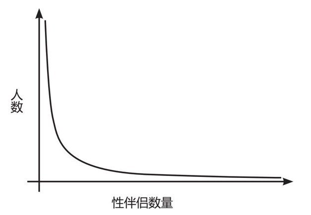
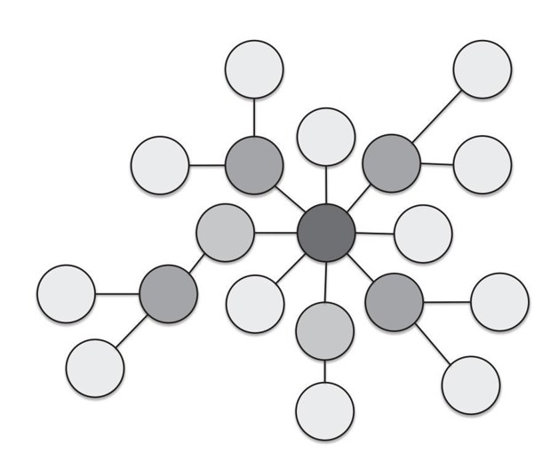
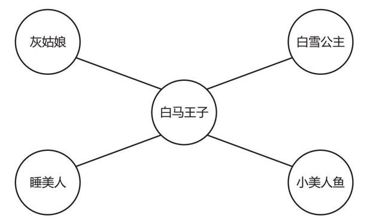

一旦你找到喜欢的对象并用自己的迷人个性和鲜亮外表打动了对方，一切将不可避免地转入卧室。
本章不会改善你的床上表现。我觉得有必要事先声明这一点，以免让你觉得数学家隐藏了如何做优秀情人的秘密。不过如果你允许我稍微绕个弯子扯远一点儿，我想与你分享一些数学家对性习惯的观察。这些观察远远超越了基础统计学。
两个人第一次发生性关系时有可能引发很多事件：新的生命，新的传染病，双方产生极大的羞耻感以及——偶尔会有的——快感。不过在两人交欢时有一件事一定会发生：他们在假想空间里建立了关联。
这种关联无法被撤回，不论你恢复神志后是何期望。这种关联也是双方的（高潮就说不定了）：每当新的关联被建立，双方都各自为性伴侣总数做了加法。这种清晰、易界定的关联使性关系网络成为科学家和数学家尤其感兴趣的研究案例。
虽然我们无法看到或绘制由性交建立的关系网络图，但是我们能够通过数学来了解其中的重要元素。从这个网络图中，我们能对男女差异窥探一二，也能洞悉人类性行为的规律，甚至还能提供中断性病传播的策略，本章将对此进行阐述。
我们的故事始于几位瑞典科学家于1996年做过的一个调查。他们通过采访和问卷收集了2 810位随机选择的瑞典人的性史。这些人来自瑞典各地。调查包括了一个关键信息：每位接受调查者的性伴侣数量。我们将会看到，这庞大的反馈量为其他科学家和数学家提供了直接研究性接触网络的机会，而这项调查本身也带来了有趣的发现。
就如之前几个调查所显示的那样，科学家发现平均性伴侣数量其实比较低：异性恋女人约有7个性伴侣，异性恋男人约有13个。
不过在我们开始加固男人风流、女人贞洁的守旧理论之前，目光敏锐的你或许会对这个差异产生疑问，而有这个疑问是正确的。事实告诉我们，全世界异性恋男女的人数相当，而性行为必然在两个人之间发生，那么男女的平均性伴侣人数应该是相同的。然而此类问卷一次又一次地显示了男女性伴侣平均值之间的差异。
这里有几种对差异的可能性解释。或许男人更爱夸大事实（或者“说谎”，就如文献中显示的那样）。或许男女对何为性伴侣的定义是不同的。
略微更有力的论点围绕着这样一个事实展开：有些性伴侣数量极高的女人并未纳入调查。比如，假设你要采访的下一个女人和3 000个人睡过。这一数据就足以把女人平均性伴侣数量从7个增加到8个，这再次显示了用算术平均值会导致的大问题。
但或许还有更有意义的解释：貌似男女计算这个数量的方式是不同的。女人更倾向于一个一个数，靠名字列出每个人：“嗯，有哈利，然后是泽恩，还有利亚姆……”这的确会得到挺准确的结果，然而假如你在数数时忘了哪个人，性伴侣的数量很有可能就是不真实的。而另一方面，男人更有可能粗略估得结果：“大概近4年内一年5个。”这也是合理的方式，只是很容易高估了数字。当你发现很大一部分男人回答的数字都是5的倍数时，你便更加确定了这个观点。
不过在研究平均数之外，这项研究还为开创性的发现提供了数据。
1999年，弗雷德里克·利耶罗斯和一组数学家把这项调查中的所有回答都画在了一张图上，并发现了简单得惊人的规律。这2 810个答案全都落在下面这个几乎完美的曲线图上，展示了研究参与者性伴侣数量的清晰规律。

多数人的性伴侣数量很少，所以曲线左边如此之高，但是有些答案来自战利品极多的人，因此右边的曲线趋于无限。如果这项调查对瑞典整体人口来讲具有代表性，那么这个曲线意味着总有可能找到有过任何性伴侣数量的人，不论数字多大。当然，世界上不会有太多超过一万，或者哪怕一千个性伴侣的人，然而根据图样的预测，还是会有一些。
这些信息可以组合成一个表达式，它能够预测人们的性伴侣数量：在全世界随意挑选一个人，他的性伴侣数量超过x的可能性则是x-α。
α直接来自数据。举个例子，研究发现瑞典女人的α值是2.1。如果这个数字对我们都具有代表性，找到一个拥有大于100个性伴侣的人的概率为0.006%，这意味着15 800个人中，至少有一个人完成了这一壮举。数字越大，概率越小。找到拥有大于1 000个性伴侣的人的概率是0.00005%，或者说二百万分之一。
在彻底为数学的奇妙而兴奋难抑之前，我觉得需要停下来赞叹一下这个发现的伟大之处。不论我们有多少自由意志，不论性关系中包含看似多么复杂的环境因素，当你从整体角度观察人群时，总会看到一个简单得惊人的、能解释一切的公式。
这个公式意味着我们每个人的性伴侣数量都不是完全偶然的，它也没有遵循通常能用来解释身高、智商等人类特征的钟形曲线。这个表达式提出性伴侣数量遵循的反而是幂律分布。
说起身高，几乎每个人都会落入一个很小的范围。大多数人身高都在五尺到六尺五之间。当然会有特例，但是一般人群中身高差距并不大。另一方面，幂律分布涉及的范围大得多。如果性伴侣数量遵循了钟形曲线，那么找到一个超过1 000个性伴侣的人就如同遇到一个和埃菲尔铁塔一样高的人。
科学家和数学家某种程度上受到这项研究的启发，他们在过去的十年内开始寻找幂律分布在很多不寻常领域的应用。他们还发现，性关系背后的分布规律与网站之间的联系，我们在社交网络上建立的关系网，单词在句子中的排列，乃至菜谱中不同食材的搭配，都如出一辙。x-α这个简单的公式统一了一切。
当我们回过头来看网络中的链接概念时，这一切的解释都变得更加明了。是这些关系造就了此类分布。幂律分布是由网络中的链接造成的，有着特殊的形状，在数学中被称作“无标度分布”。[1]
下图展示了这种无标度分布网络的样子。大多数人的关联人数大致相同，但是还有一些人，如深色圆圈所示，关联人数非常大。这些人被称作网络“枢纽”，揭示了所有貌似不相关的幂律分布情形中的相似点。截至2014年9月，凯蒂·派瑞有5 700万粉丝，是推特网上最大的枢纽；维基百科是万维网的枢纽；洋葱是食材网络的枢纽。

在所有情景中，“富者更富”的规则是枢纽形成的原因。凯蒂·派瑞拥有的关注者越多，便越有可能被更多人关注。
思考一下性关系网络便知道，人们越有能力获取战利品，便越可能和更多人上床。他们也是性病传播速度快且难以控制的原因。如果枢纽不多加小心，最容易感染疾病，也最容易传播疾病。想象一下病毒是以上述幂律分布方式传播的，你便知道枢纽对于全局来说是多么重要。
尽管枢纽是疾病传播中最关键的因素，一个数学戏法却让我们得以利用枢纽以及网络结构来控制性病的传播：设想一个简化网络，理论就不难理解了。
想象四位美丽的公主：灰姑娘、白雪公主、小美人鱼和睡美人，她们都和一位性感王子有瓜葛，形成了一个性关系网络。四位公主从未谋面，除非你看过特别不靠谱的迪士尼粉丝网站（我建议为了守护童年记忆不要去看）。

现在请想象这组人群中出现了某种恶心的性病。如果给每个人接种疫苗或进行教育，费用过于昂贵，我们要考虑首先把精力单独集中在枢纽身上：那个影响力最大的人。
然而如果不向每个人询问他们的性伴侣数量，我们便不会看到该网络中的潜在链接，也不会知道白马王子就是那个枢纽。
这里的任务便是：在不了解该网络的情况下使找到枢纽的概率最大化。
如果我们随意找一个人来接种疫苗，我们选中枢纽的概率只有1/5。
不过假如我们随意选择一个人，比如说那可爱的小美人鱼，让她帮助我们为与她发生过性关系的人接种疫苗，她便会带领我们找到白马王子。同理，如果我们随机选中了灰姑娘，让她告诉我们她与谁发生过关系，她也会指引我们找到白马王子。睡美人和白雪公主也是如此。
仅仅在算法中加入这简单的一步，我们就能把找到枢纽的概率增加到4/5。提高幅度很大。
这也适用于更大范围的网络。想象一下我们要在没有任何网络数据或关注度数据的情形下找到凯蒂·派瑞——此书撰写时推特上的最大枢纽。
如果我们从5亿推特用户中随机挑选一人，我们找到凯蒂的概率只有五亿分之一。
然而如果我们随意挑选一个人，并让他指出他所关注的最受欢迎的人，那么只需很酷的5 700万次就能找到凯蒂了。忽然间，找到凯蒂的概率提升了10%。对于如此简单的算法而言，这已经非常了不起了。
这种程序被应用在预测并减缓流行病的蔓延中，避免了艰难而昂贵的对相关网络的调查。但是我认为它还揭示了令人惊叹的一点：联系我们每个人的庞大网络是如此简单，以及我们如何凭借对数学的理解和基本运算法则便能得到关于性病传播的重要见解。
所以下次当你要扩充床头名册时，请考虑一下你将要做出贡献的庞大网络。数学家无法给你更好的性体验，但我们在试图降低你染上性病的概率。这难道不性感吗？
[1] 这些网络被称作无标度分布是因为，不像普通的分布或泊松分布那样，幂律分布中不存在用来定义标度的传统参数（比如平均数或标准差）。